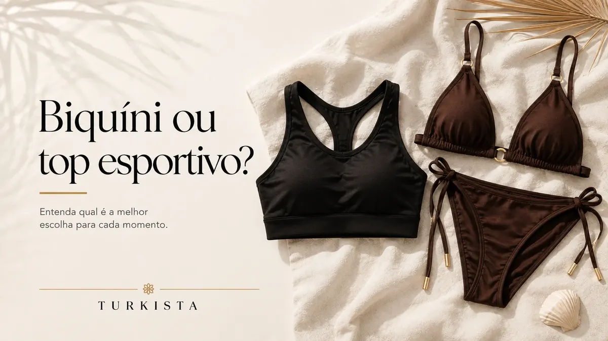

Roupa fitness para academia: como montar combinações confortáveis
Monte looks de academia considerando liberdade de movimento, combinação de peças e cuidados com os tecidos.

Para montar roupa fitness para academia, combine peças que permitam os movimentos da sua rotina, tenham um ajuste confortável e sejam fáceis de cuidar. Você pode começar por um conjunto coordenado ou misturar top, legging e short de cores diferentes. O melhor look é aquele que atende ao treino planejado e faz você se sentir à vontade.
Antes de escolher, pense na atividade, na temperatura do ambiente e nas peças que já possui. A combinação visual é importante, mas deve vir junto da avaliação do ajuste e das informações do produto.
Escolha a base do look
Uma legging, um short ou uma calça fitness podem servir como ponto de partida. Peças lisas costumam facilitar combinações com tops estampados; uma parte de baixo estampada pode ganhar destaque com um top neutro. Se prefere um conjunto pronto, verifique quais peças estão incluídas e se o tamanho é especificado para cada item.
A descrição deve esclarecer a composição e os cuidados quando essas informações estiverem disponíveis. Não presuma que duas peças com aparência semelhante tenham a mesma elasticidade ou sejam indicadas para a mesma atividade.
Combine cores com praticidade
Escolha uma paleta que facilite o uso das peças ao longo da semana. Preto, azul-marinho e outros tons neutros podem funcionar como base para diferentes tops. Cores vibrantes e estampas ajudam a variar o visual sem precisar substituir todas as peças.
Você pode repetir uma cor do top na legging ou usar contraste entre claro e escuro. Não há uma regra obrigatória de combinação: experimente opções e considere o que gosta de vestir.
Priorize liberdade de movimento
Antes de treinar, confira se a roupa permite agachar, levantar os braços, caminhar e realizar os movimentos previstos sem repuxar ou escorregar. Observe cós, alças, costuras e áreas que ficam sob tensão. Uma peça confortável deve permanecer no lugar sem exigir ajustes constantes.
A adequação depende do modelo e da atividade. Não conclua que todo short, top ou legging serve para qualquer exercício; confira a descrição e escolha de acordo com o uso pretendido.
Pense em camadas e temperatura
Uma camiseta leve, jaqueta ou camisa aberta pode complementar o look no trajeto até a academia ou durante o aquecimento, desde que não atrapalhe os movimentos. Considere a temperatura e a necessidade de retirar uma camada durante o treino.
Para ambientes mais quentes, escolha uma composição que seja confortável para você e siga as instruções de lavagem para manter as peças em boas condições.
Organize um pequeno guarda-roupa fitness
Você não precisa de muitas peças para criar combinações diferentes. Escolha duas ou três partes de baixo que combinem com vários tops, e acrescente cores ou estampas que tragam variedade. Antes de comprar, pense em quantos looks consegue montar com a peça nova.
Confira o catálogo da Turk Fit e leia a ficha de cada item. As informações de tamanho, composição e características podem variar entre produtos; confirme os detalhes antes de finalizar a escolha.
Cuide das peças depois do treino
Evite deixar roupas úmidas por muito tempo dentro da bolsa. Lave conforme a etiqueta, não use produtos agressivos sem indicação e deixe secar completamente antes de guardar. Esses hábitos ajudam a evitar odores persistentes e desgaste desnecessário.
Perguntas frequentes
É melhor comprar conjunto fitness ou peças separadas? Depende da sua rotina. O conjunto facilita uma combinação pronta; peças separadas podem oferecer mais possibilidades de looks.
Como combinar top e legging? Comece por uma paleta simples, repita uma cor ou contraste uma peça estampada com outra lisa.
Qual roupa usar para musculação? Escolha peças que permitam os movimentos do treino e permaneçam confortáveis. Confira a finalidade informada pelo fabricante.
Posso usar roupa fitness fora da academia? Algumas peças combinam com looks casuais, dependendo do corte e do tecido. Avalie cada produto individualmente.
Como evitar que a roupa fique com odor? Não deixe a peça úmida dentro da bolsa por muito tempo e lave conforme a etiqueta após o uso.
Um guarda-roupa fitness funcional começa com peças confortáveis e fáceis de combinar. Escolha de acordo com o treino, confirme as informações e aproveite melhor o que já tem.
Explore peças relacionadas
Ficou com dúvida sobre uma peça?
Fale com a Turkista pelo WhatsApp para confirmar informações antes de escolher.
Falar no WhatsApp